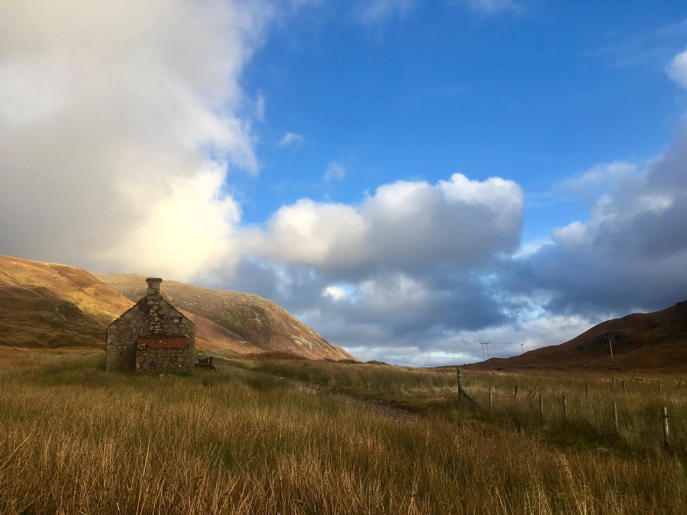
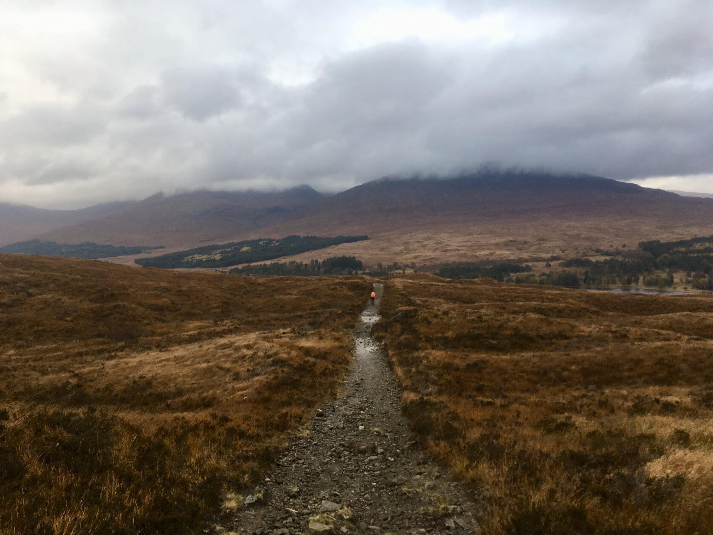
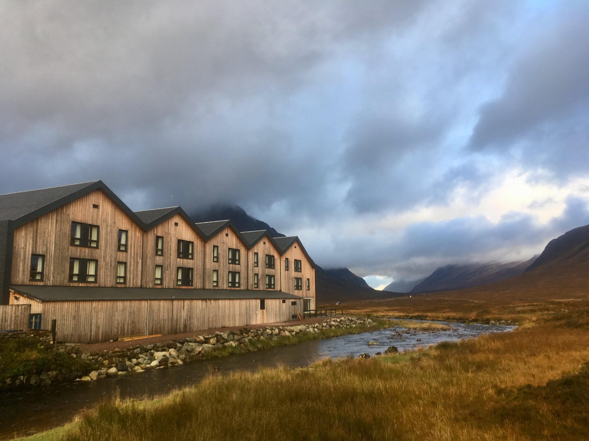
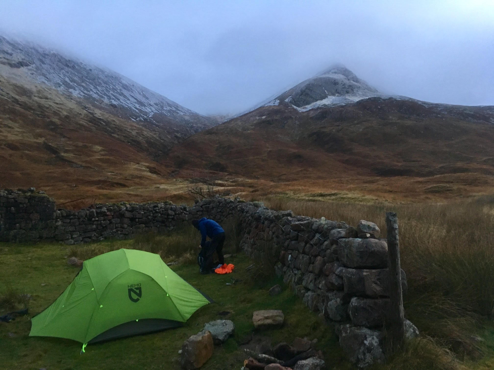
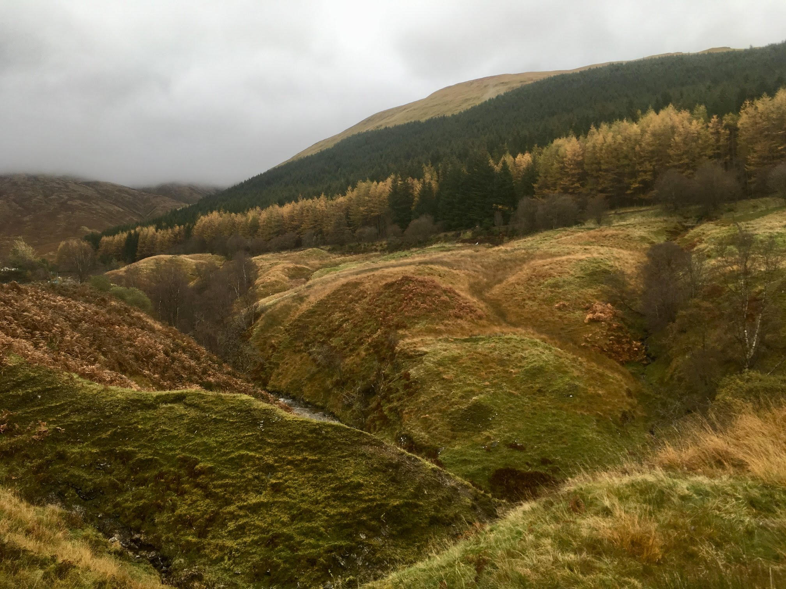
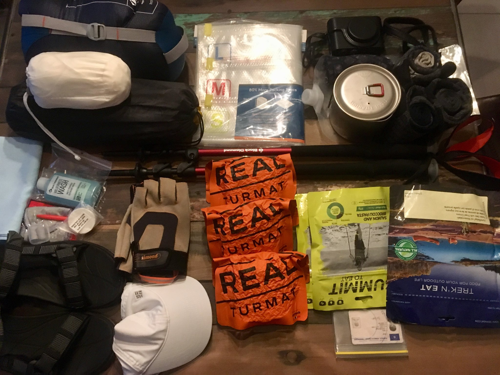

Hiking the West Higland Way
Kenny Denolf - 18/05/2020
Walking the West Highland Way should, in my opinion, be on everyones bucketlist. Across this 154 km hiking route, you'll walk between some of Britisch most beautifull nature sights, with multiple highs and lows, literally and figuratively!
But make no mistake, it is not exactly a walk in the park. Still it is absolutely worth it!
If you are planning to do the West Highland Way, I hope this blog will provide answers to some of the most frequently asked questions.
- How to plan for the West Highland Way?
- How hard is the West Highland Way?
- Do I need to prepare for bad weather?
- Things to pack in your backpack?
- A few extra tips!
How to plan for the West Highland Way
First and foremost, you need to decide realisticly in how many days you want to walk the West Higland Way. Some people can walk the entire route in six days, others take 10 to 14 days.
We took 8 days at a normal pace, and this would be my recommendation.
Factors to consider
Hoster or tent
If you don't bring your tent, there are 13 stops with a hostel, with 4 to 24 km distance in between them.
If you do bring your tent, you can practically sleep where you want. Wild camping is allowed in Scotland, but only with 2 to 3 tents in one spot. If you like to sleep at a camping site, you better book early in the summer times.
Distance and altimeters
The route starts in Milngavie and ends in Fort William. In our case, we walked about 15 to 30 km each day. But distance is not the only thing to consider, you also need to take the altimers and difficulty of the path in consideration.
You will ascent at least 80 meters and maximum 600 meters each day. On the official website of the WHW you'll find all details for each stop.
How hard is the West Highland Way?
The West Highland way can be quite a tough walk, and it is not recommended for people without hiking experience. But you can make the hike as hard as you like yourself. There are multiple exit points available that bring you back to either Milngavie or Fort William.
We walked the route with all of our lugage in our backpack, but there is an option to transport your bagage to your overnight stay. Our recommendation is to train a few months before taking the hike, and if you plan on trekking with a backpack, carry it during your training.
Do I need to prepare for bad weather?
Well it is Scotland, so there is a very high chance that it will rain during your hike. However, you should not expect hours of rain showers every day, especially not in the summer.
The best time to do the West Highland Way is in May, because then it is not to cold and there are not a lot of midges during that time. In the summer, you can expect about 15 to 20 degrees celcius, and midges are known to be a real plague.
Things to pack in your backpack?
The most important item on your packlist is a good hiking backpack. It is recommended to take some advise from a specialist, to know which one suits you best.
Good walking shoes are also a must, and definitly don't start the hike with new walking shoes! We would recommend a B to BC hiking boot, to protect your ankles.
Wearing walking socks can also help in avoiding any blisters, and we recomment to bring multiple pairs (so they can dry after rain).
Hiking poles are not a must, but can really help you on more rocky terrain.
What else do you need? A zip-off pants, air-breathing T-shirts, a windstopper and a good rain jacket. Also bring a warm sweater in case of cold nights.
A few extra tips!
- Learn how to pronounce some of the villages names. If you ask the Scottisch people about the way to Milngavie, they will only understand your if you pronounce it as 'Mulgai'.
- Bring a waterproof map case.
- Don't always trust the distances mentioned on the road signs. It's quite likely that you'll walk more than 154km on the West Highland Way, as you navigate up and down hills, rougher terrains and through mud and water.
- Book your West Highland Way accommodations ahead.
- Don't forget ot bring your First Aid Kit. Hopefully you'll never need it, but it is better to prepared.
- Bring plastic bags, they can be used to bag up any rubbish along the way, until you find an appropirate bin or recycling point to dispose of it.
I'll leave you now with a quote from John Muir:
The mountains are calling and I must go.